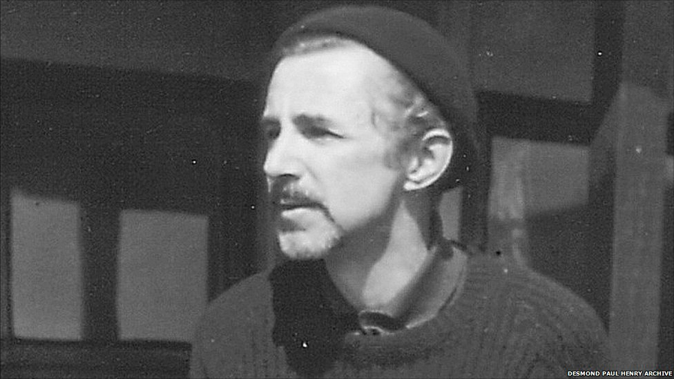
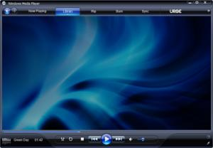

Desmond Paul Henry (1921-2004) was one of the first British artists to experiment with machine-generated visual effects at the time of the emerging global computer art movement of the 1960s. He was a Manchester University Lecturer and Reader in Philosophy (1949-82).
During his time as a Lecturer and reader, he constructed a succession of three drawing machines from modified bombsight analogue computers which were employed in World War II bombers to calculate the accurate release of bombs onto their targets. Henry's machine-generated effects resemble complex versions of the abstract, curvilinear graphics which accompany Microsoft's Windows Media Player. Henry's machine-generated effects are also said to represent early examples of computer graphics or the making of drawings with the aid of computers and/or drawing machines.
During the 1970s Henry focussed on further developing his own unique photo-chemical techniques for the production of original visual effects. He went on to make a fourth and a fifth drawing machine in 1984 and 2002 respectively. These later machines however, were based on a mechanical pendulum design and not bombsight computers.
Henry's drawing machines of the 1960s represented a remarkable innovation in the field of art and technology for a variety of reasons. His machines' reliance on a mechanics of chance, as opposed to pre-determined computer programmes, ensured the unrepeatable and unique quality of his infinitely varied machine-generated effects or "mechanical fractals". Thirdly, the spontaneous, interactive potential of his drawing machines' modus operandi pre-empted by some twenty years this particular aspect of later computer graphic manipulation software.
Henry was never artistically inspired by the graphic potential of the modern digital computer. He much preferred the direct interaction afforded by the clearly visible interconnecting mechanical components of the earlier analogue computer and as a consequence of his drawing machines also.
In view of these considerations, Henry's drawing machines may be said to not only reflect the early experimental phase of Computer Art and computer graphics but to also provide an important artistic and technological link between two distinct ages of the twentieth century: the earlier Mechanical/Industrial Age and the later Electronic/Digital Age.
Following the war, paper was in short supply and knowing his son's passion for drawing, Henry's father, Joseph Henry, who worked for Kodak, brought home quantities of waste, photographic, light sensitive paper from fire-damaged warehouses, for his ever inventive son to experiment with. Henry's "making the best" of this convenient paper source unfortunately led to the family bath being left with semi-permanent purple streaks round its white enamel circumference! The abstract effects Henry obtained using this photographic paper, he then further embellished by hand to create surreal landscapes inhabited by distorted human figures.